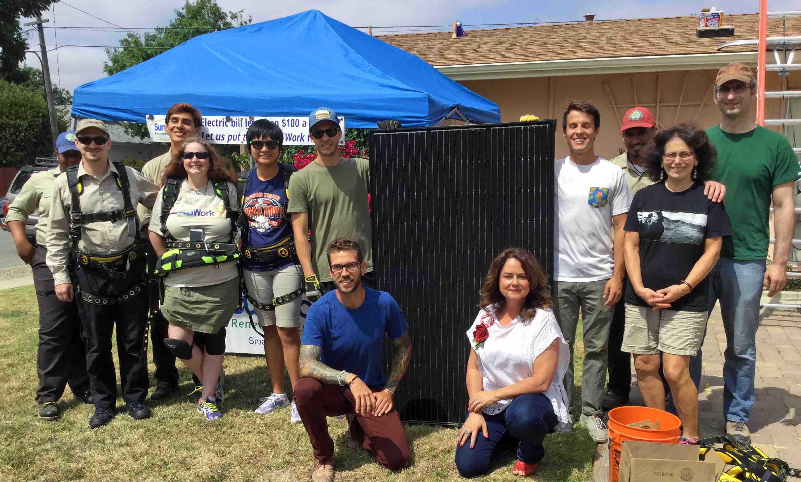

SunWork Community Connection
Newsletter sign up
Past Issues
Spring/Summer 2017
Fall 2017 issue
As SunWork approached its 500th installation in June 2017, Sara Webber, Executive Director of the Berkeley Food Network, stopped by the SunWork booth at the Berkeley Farmers’ Market to talk about solar. Sara’s husband, Leif Brown, Director of Documentation at Databricks, followed up, and their installation in late June, with Leif helping as a volunteer, was SunWork’s 500th installation. The first SunWork installation was in 2009 and the 100th installation was in 2014. Now, just three years later, the 500th installation is complete along with a celebration and an article in the San Jose Mercury News. READ MORE ...
SunWork Partners to Help Oakland’s Harbor House Go Solar
SunWork has partnered with
nonprofit RE-volv for several nonprofit solar installations around the Bay Area. RE-volv focuses on financing solar systems for nonprofits and has a unique revolving credit line model that allows nonprofits to go solar with no money down.
RE-volv worked with Harbor House providing the financing and partnered with SunWork for the installation.
 Harbor House, founded in 1972,
serves the Oakland Community and offers after-school programs and leadership
training for children and teens, ESL classes, jobs skills training, a food
pantry and more. They’re giving the community a second place to call home and
making it a safe space to grow and learn.
Harbor House, founded in 1972,
serves the Oakland Community and offers after-school programs and leadership
training for children and teens, ESL classes, jobs skills training, a food
pantry and more. They’re giving the community a second place to call home and
making it a safe space to grow and learn.
SunWork designed the system and with the help of many volunteers built the 14.4 kW solar system with 48 solar panels that will reduce Harbor House’s electric bills by roughly 39%, and saving around $111,000 over 25 years. The money saved will help improve the quality of Harbor House services and enable them to serve more of the community. That's a lot of snacks for the children! READ MORE ...
Expansion Brings SunWork to California's Central Coast
Mayor Heidi Harmon
and Council Member Aaron Gomez, both kneeling, joined the SunWork volunteers, homeowner
Deborah Marcus, and others to celebrate this first solar installation by
SunWork in the San Luis Obispo area.
SunWork
is bringing its innovative nonprofit solar model to the greater San
Luis Obispo (SLO) and northern Santa Barbara County areas. In September,
Project Lead Bryan Noel completed three installations in the SLO area
with the assistance of newly trained local volunteers.
In December, another wave of installations will take place as Bryan
further ramps up SunWork’s efforts. By March of 2018, Bryan will
complete his projects in the SF Bay Area, allowing him to bring
lower-cost solar to his new territory on a full-time basis. If you know
anyone in the Central Coast who might be interested in solar, please
let them know that SunWork is on the way!
For a summary of SunWork’s first project in the SLO area, READ MORE...
Solar and Electric Vehicles (PV + EV)
More than 500,000 homes in California have
rooftop solar. There are over 100,000 fully electric vehicles (over 250,000
including plug-in hybrids) in California. About 20% of SunWork customers have
both solar and an electric vehicle.
Powering an EV with rooftop solar means driving
far cleaner cars for far less money. READ MORE..